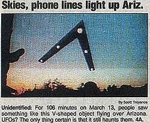

The Phoenix Lights were a series of widely sighted UFOs/UAPs in the skies over the southwestern U.S. Arizona and Nevada. Some witnesses described seeing a huge carpenter's square-shaped UFO containing five spherical lights.

Both sightings were due to aircraft participating in Operation Snowbird, a pilot training program operated in winter by the Air National Guard out of Davis-Monthan Air Force Base in Tucson, Arizona. The first light group was later identified as a formation of A-10 Thunderbolt II aircraft flying over Phoenix while returning to Davis-Monthan. The second group of lights were identified by Robert Sheaffer as illumination flares dropped by another flight of A-10 aircraft that were on training exercises at the Barry Goldwater Range in southwest Arizona.[5] Fife Symington, governor of Arizona at the time, years later recounted witnessing the incident, describing it as "otherworldly."
I don't have a proper opinion on this one because there were a lot of witnesses who thought it was a UFO. However, it could possibly be an overactive imagination. Furthermore, it could be Operation Snowbird--but then again, it could also be a cover up. It would be easier to know if I were a witness.